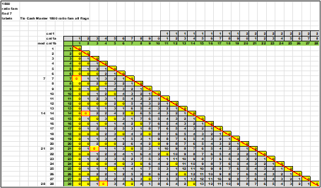
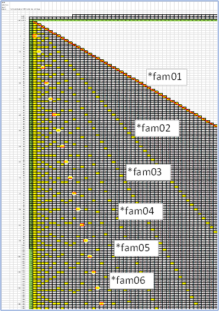
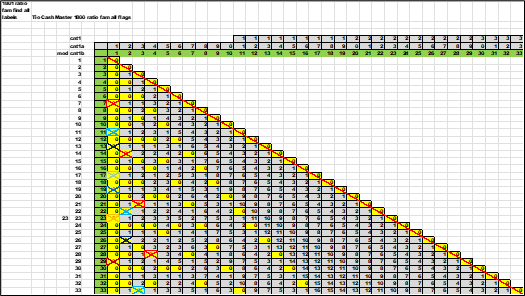
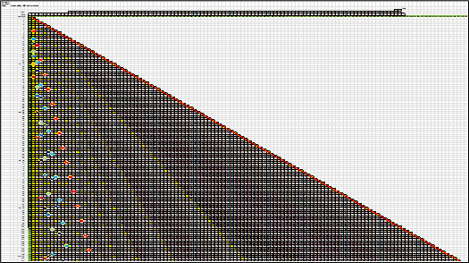
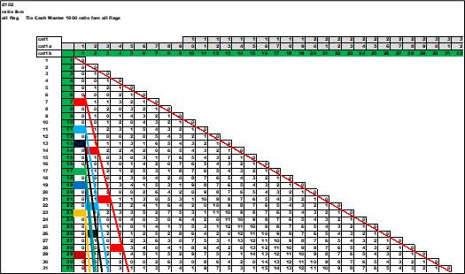
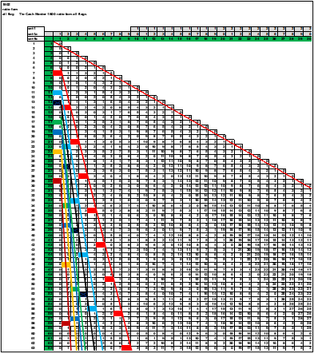
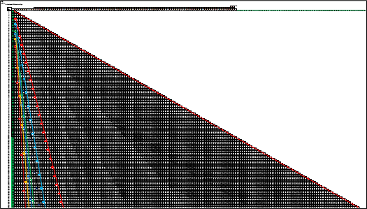

Telltales there appeared a clear pattern of all the *fam that were sorted off from the initial rules. Inside the file:
'Tio Cash Master 1800 ratio fam all flags'
Are three tabs:
1800 ratio fam find 7 labels
1801 ratio fam find all labels
1802 ratio fam all flag
The names are listed because the views are shrunk down and unreadable. Each view is a grand representation of the data.
The first view is : '1800 ratio fam find 7 labels'. Here only the *fam07 line is populated and colored. Every multiple of seven is painted with a red centered font and a red box around each cell.
To the right are the *fam that have been sorted off. The *fam07 is the red font line.
The tab is : 1801 ratio fam find all labels , where each *fam is painted with an 'X' across the cells. Each *fam has a different color.
A larger view of the same data ; watch the patterns for each *fam.
Finally , the tab : ‘1802 ratio fam all flag’ is colored and a line is drawn connecting the flags sitting on top of the cell. Each *fam is represented by a flag and unique color. This is a cleaner view with no MOD()coloring of the data.
Here is a medium size view showing the progression of the flags and the lines. The red flag and line on the right is *fam07 , and *ratio 1/7 (0.142859). Anything to the left can be inspected to look for factors.
This is a larger view of the same data. There is a constant value of the *ratio compared to the far-right number , the hypotenuse.
